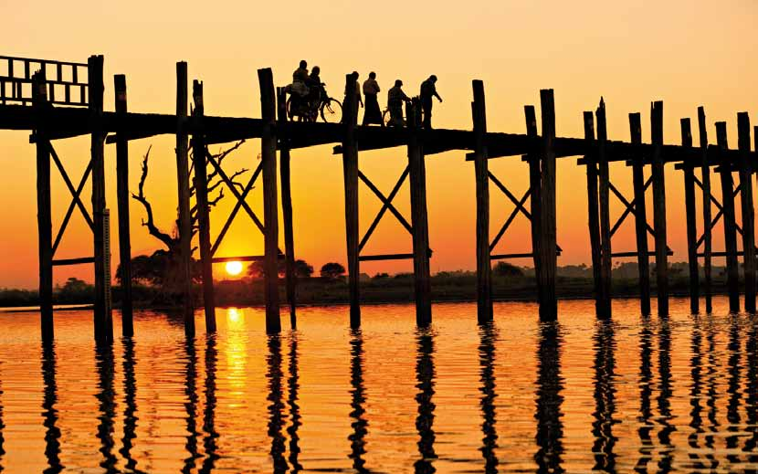

Myanmar er det gyldne, glemte land. Turistens drømmerige med tusindvis af pagoder, orangeklædte munke og en smilende, venlig befolkning. På denne 18 dages rundrejse får du ud over højdepunkterne Mandalay, Bagan, Inle-Søen og Yangon en fascinerende tur til de etniske minoriteter i Shanstaten – langt væk fra andre rejsende i dette smukke land. Dag 1 København – Bangkok Dag 2 Bangkok – Mandalay Dag 3 Mandalay Dag 4 Mandalay - Hsipaw Dag 5 Hsipaw Dag 6 Hsipaw – Pyin Oo Lwin Dag 7 Pui Oo Lwin Dag 8 Pyi Oo Lwin - Mandalay Dag 9 Mandalay – Bagan Dag 10-11 Bagan Dag 12 Bagan – Inlesøen Dag 13 Inlesøen Dag 14 Inlesøen – Nyang Shwe Dag 15 Nyang Shwe – YangonDag 16 YangonDag 17 Yangon – BangkokDag 18 Bangkok – KøbenhavnPriser og datoer finder du på hjemmesiden.
På denne 12-dages rundrejse oplever du højdepunk-terne i dette smukke land: Mandalay, Bagan, Sejl-tur på Ayeyarwadly-floden, den skønne Inle-sø, og naturligvis hovedstaden Yangon.
Og i modsætning til andre rejsebureauers Myanmar-rejser, bevæger vi os over land for derved at få den bedste rejseoplevelse.
Dag 1 København – Bangkok
Dag 2 Bangkok – Mandalay
Dag 3 Mandalay
Dag 4 Mandalay – Bagan
Dag 5-6 Bagan
Dag 7 Bagan – Inle LakeDag 8 Inlesøen
Dag 9 Inle – Yangon
Dag 10 Yangon
Dag 11 Yangon – Bangkok
Dag 12 Bangkok – KøbenhavnPriser og datoer finder du på hjemmesiden.
På denne rejse kommer du til områder som har været lukket for rejsende i mere end 50 år. Den indtil nu helt isolerede delstat Rakhine i det nord-vestlige hjørne af Burma rummer fantastiske uspolerede arkæologiske områder med hundredvis af templer og tusindvis af Buddhaer, uberørte landsbyer, floder med krystal-klart vand og ikke mindst en ven-lig og nysgerrig lokalbefolkning. Rejsen slutter med tre dage ved Den Bengalske Bugt. Dag 1 København – Bangkok Dag 2 Bangkok – Mandalay Dag 3 Mandalay Dag 4 Mandalay - Hsipaw Dag 5 HsipawDag 6 Hsipaw – Pyin Oo LwinDag 7 Pyi Oo Lwin - MandalayDag 8 Mandalay – Fly til YangonDag 9-10 YangonDag 11 Fly til Sittwe, båd ti Mrauk UDag 12 Mrauk UDag 13 Mrauk U og udflugt til Chin landsbyerDag 14 Mrauk U – Sittwe, fly til ThandweDag 15-16 NgapaliDag 17 Thandwe til Yangon – BangkokDag 18 Bangkok – KøbenhavnPriser og datoer finder du på hjemmesiden.
På denne rejse får du alle højdepunkterne - Manda-lay, Bagan, Inle-Søen og Yangon - krydret med let vandring til de små landsbyer og besøg ved Golden Rock syd for hovedstaden Yangon. Med vores burme-siske specialguide får I stor indsigt i landets kultur og historie, helt tæt på burmeserne, der beredvilligt hilser jeg velkommen i deres smukke land. Dag 1 København – BangkokDag 2 Bangkok – MandalayDag 3 Mandalay - Sagaing - Amarapura - MandalayDag 4 Mandalay - MonywaDag 5 Monywa - Pakokku - BaganDag 6 BaganDag 7 Bagan - Mt. Popa - BaganDag 8 Bagan - KalawDag 9 Kalaw - vandring - Nyanung ShweDag 10 InlesøenDag 11 Nyang Shwe - fly til Yangon - KyaikhtiyoDag 12 Kyiakhtiyo - Bago - YangonDag 13 YangonDag 14 Yangon - afrejse via BangkokDag 15 Hjemkomst